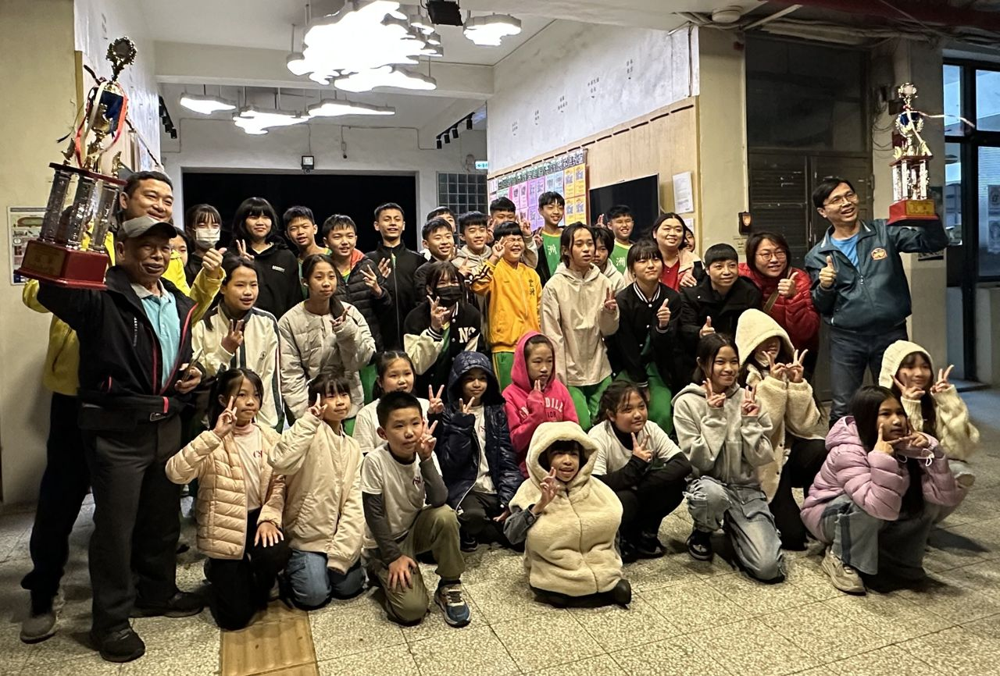
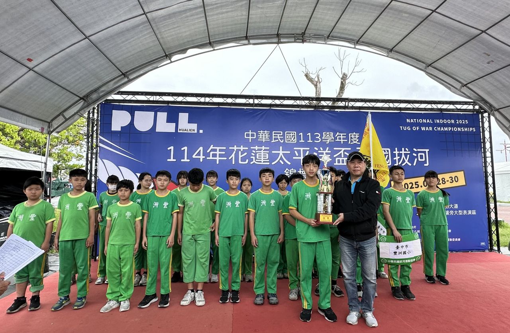
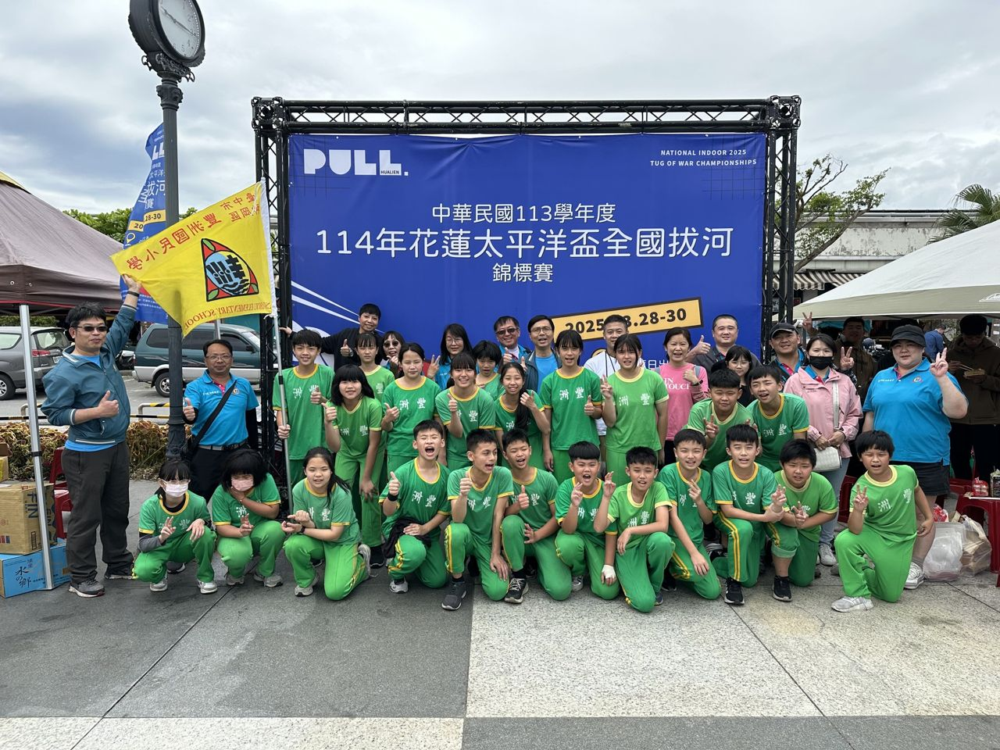
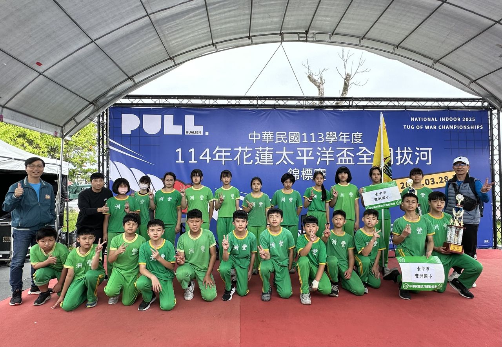
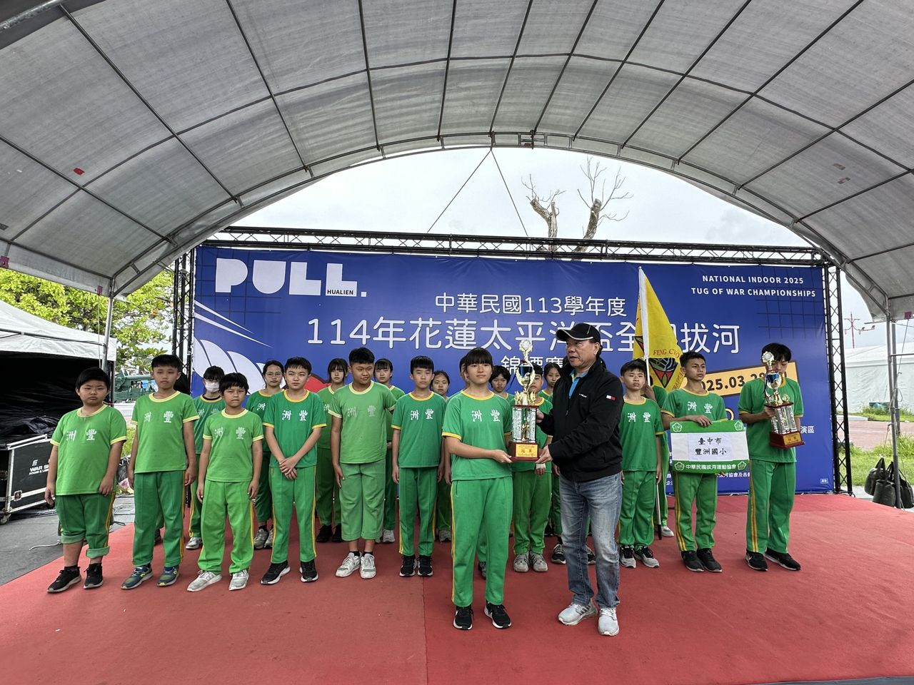
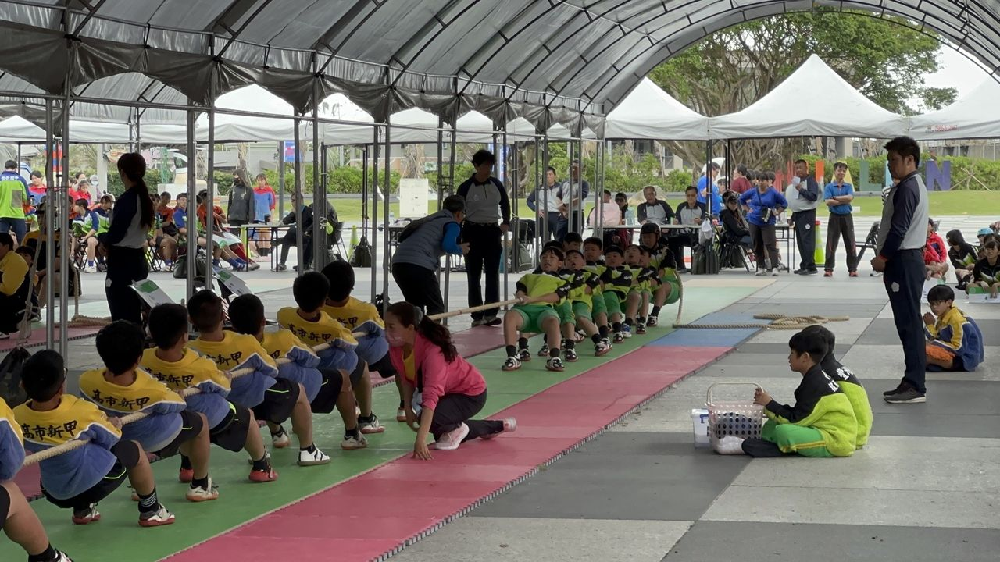

“One rope, soul and all.”
FengChou’s tug-of-war team travelled all the way to Hualien for a three-day, two-night campaign at the 2025 Pacific Cup National Tug-of-War Championships — a tournament packed with strong teams from every county in Taiwan.
Through round after round, both our boys’ team and our girls’ team fought their way into the semi-finals. From the first heats to the knockout rounds they advanced like an unstoppable tide — and although a few opponents pushed back hard, both teams stayed unbeaten and reached the finals as winners’ bracket champions.
In the championship pulls, our young athletes battled to the last centimetre and took the title in both the boys’ and girls’ divisions — double national champions. With the parents’ support group cheering, and coaches and teammates lifting each other up, FengChou brought a national crown home to Taichung.
豐洲國小拔河隊一繩入魂，追求巔峰！遠赴花蓮三天兩日參加 114 年花蓮太平洋盃全國拔河錦標賽，各縣市報名隊伍實力堅強、競爭激烈。
經過一連串分組比賽，本校男生組、女生組順利晉級複賽，由初賽到複賽一路勢如破竹；雖偶有驚險，男女生組皆以全勝之姿成為勝部冠軍，最終於冠亞軍賽奮戰到底，分別拿下國小男生組與女生組冠軍。
在家長後援會鼎力支援、教練團與學生團隊相互打氣下，奪得耀眼佳績。大家相約，接下來的教育部全國拔河比賽，要繼續發光發熱，為台中留下全國冠軍！





